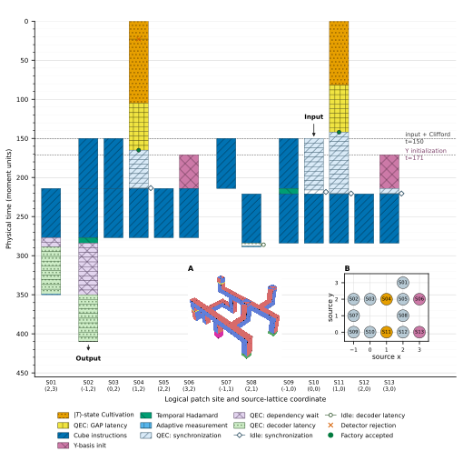

Emulate Hardware Synchronization¶
This tutorial uses Bloq’s backend timing controls to emulate hardware waiting and synchronization in a T–H–T–H computation. Set input arrival times and decoder latency, then inspect how live patches stay protected while resources and classical results become ready.
The example runs in Bloq VM with a mock decoder. It models a controller’s waiting behavior. Device integration needs a custom backend with the hardware’s own timing and decoder.
Locate the waits in THTH¶
Load the THTH gallery graph. Its two T gates consume cultivated resources,
and the corrected parities mzz1 and mzz2 select later measurement bases.
The Hadamards connect the two injections.
Each injection needs both a data patch and an accepted T state. Its adaptive measurement also needs a decoded parity:
flowchart LR factory["T factory<br/>retry until accepted"] --> join["T injection<br/>wait for both patches"] input["Data patch arrives"] --> join join --> parity["Measure joint parity"] parity --> decoder["Wait for decoder result"] decoder --> cap["Select measurement basis"]
Waiting point |
What must become ready |
What happens meanwhile |
|---|---|---|
T injection |
Data patch and accepted T state |
Independent preparation overlaps. The patch that arrives first stays protected. |
Adaptive measurement |
Corrected |
The resource patch stays protected until its measurement basis is known. |
Logical output |
Final Pauli frame |
The output patch stays protected until the frame is ready. |
Use whole memory rounds for long waits and physical idle intervals for gaps shorter than one round. At a join, finish the current QEC round before starting the joint operation. See Synchronization for the IR’s memory templates and fixed-round padding APIs.
Dependency between the two T gates¶
The measurement selected by mzz2 must wait for the measurement selected by
mzz1 to finish. The mzz2 correlation surface reaches the first selected
measurement at (2, 1, 2), so its corrected parity needs that measurement’s
records and frame corrections.
flowchart LR m1["Corrected mzz1"] --> cap1["First selected measurement<br/>finish and produce records"] cap1 --> m2["Assemble and decode mzz2"] joint2["Second joint measurement records"] --> m2 m1 -->|Frame correction| m2 m2 --> cap2["Second selected measurement"]
Compilation derives this dependency from the source correlation surfaces and
represents it with node dependencies in Bloq IR. The first measurement’s
quantum node feeds the classical readout nodes for corrected mzz2, which
control the second measurement’s quantum node. Backends follow these
dependencies automatically.
Independent T-state preparation and earlier surgery work can still overlap while the second selected measurement waits.
Configure the backend timing¶
Use bloq.lower_vm() in Python or LoweringConfig in Rust. Release times set
when a source may start. Dependencies, decoded values, and occupied qubits can
delay it further. Use one time unit for releases and moment durations.
Python control |
Rust control |
Value in the example |
Purpose |
|---|---|---|---|
|
|
|
Set the duration of each nonempty physical moment. |
|
|
|
Start T factories before the data arrives. |
|
|
|
Model a later arrival of the logical input. |
|
|
|
Release ordinary Clifford sources. Prepared-Y sources are shifted to finish with them. |
|
|
|
Model decoder latency in local memory rounds. |
Decoder waiting has two timing rules:
Query |
Result-ready time |
|---|---|
Ordinary logical readout |
Ten memory-round durations after the last contributing measurement, or the request time, whichever is later. Independent work can overlap the latency. |
Accepted T factory |
After ten additional physical memory rounds following cultivation and escape. Earlier measurements do not shorten this hold. Rejected attempts skip it. |
Factory retries make resource readiness vary between shots. A rejected attempt cancels unissued work, lets issued work finish, and replays the authored preparation. Only the accepted attempt exports records to later operations.
Run the example¶
Compile at distance 3 and run without noise. Ideal mock-decoder decisions keep this check focused on timing and the logical output.
import csv
import json
import math
from collections import Counter
from pathlib import Path
import bloq
# [example-start]
ir = bloq.compile(bloq.GalleryItem.THTH.load(), distance=3)
program = bloq.lower_vm(
ir,
gate_duration=1.0,
decoder_latency_rounds=10,
factory_release_time=0.0,
source_release_time=23.0,
input_release_time=23.0,
)
result = program.run(
seed=17,
input_state="plus",
decoder_acceptance=1.0,
accepted_accuracy=1.0,
rejected_accuracy=1.0,
)
assert not result.discarded
expected = (math.sqrt(0.5), 0.5, 0.5)
assert all(math.isclose(a, b, abs_tol=1e-9) for a, b in zip(result.logical_bloch(), expected))
trace = result.trace
assert trace["metadata"]["decoder_latency_rounds"] == 10
assert all(span["end"] <= result.finished_at + 1e-9 for span in trace["timing"])
Path("thth.instructions.json").write_text(program.to_json(indent=2), encoding="utf-8")
Path("thth.trace.json").write_text(result.to_json(indent=2), encoding="utf-8")
print("logical Bloch vector:", result.logical_bloch())
print("finished at:", result.finished_at)
print("source roles:", dict(Counter(source["role"] for source in program.sources)))
Run the complete Python example with python thth.py in
an empty output directory. It also exports thth.timeline.csv.
use bloq::{
graph::GalleryItem,
vm::{self, LoweringConfig, SourceTiming},
};
fn main() -> Result<(), Box<dyn std::error::Error>> {
// [example-start]
let ir = bloq::compile::compile(&GalleryItem::THTH.build(), 3)?;
let options = LoweringConfig {
gate_duration: 1.0,
decoder_latency_rounds: 10,
source_timing: SourceTiming {
factory: 0.0,
input: 23.0,
clifford: 23.0,
},
..Default::default()
};
let program = vm::lower(&ir, &options)?;
let mut runtime = options.runtime_config(17);
runtime.decoder.acceptance_probability = 1.0;
runtime.decoder.accepted_accuracy = 1.0;
runtime.decoder.rejected_accuracy = 1.0;
let result = program.run(runtime)?;
assert!(!result.artifact.discarded);
let actual = result.logical_bloch(&program.outputs[0])?;
let expected = (0.5_f64.sqrt(), 0.5, 0.5);
assert!((actual.0 - expected.0).abs() < 1e-9);
assert!((actual.1 - expected.1).abs() < 1e-9);
assert!((actual.2 - expected.2).abs() < 1e-9);
std::fs::write("thth.instructions.json", program.to_json_pretty()?)?;
std::fs::write("thth.trace.json", result.artifact.to_json_pretty()?)?;
println!("logical Bloch vector: {actual:?}");
println!("finished at: {}", result.artifact.finished_at);
// [example-end]
Ok(())
}
Run cargo run --locked --release --manifest-path docs/examples/Cargo.toml --bin thth
in the source distribution.
Both examples check that the accepted, frame-corrected output of \(HTHT|+\rangle\) has Bloch vector
Check discarded before reading the logical output. The mock decoder’s
accuracy settings test control behavior. They do not provide a calibrated
logical error rate.
Inspect waiting and synchronization in the trace¶
The examples export thth.instructions.json and thth.trace.json.
Increase input_release_time to model later data arrival, or
decoder_latency_rounds to model a slower decoder, then rerun the example.
Compare source releases, actual starts, result-ready times, and protected
waiting intervals in the trace:
Trace field or event |
What to check |
|---|---|
|
Independent work overlaps. Joined operations wait for all participating work. |
|
Compare measurement, request, and result-ready times. |
|
QEC continues during waits. |
|
Physical idle fills short gaps between protected operations. |
The following saved noisy shot illustrates the same mechanisms. Time runs downward, with one column per logical site. Cultivation retries delay one factory, and QEC protects live patches during joins and decoder waits. Column width does not represent physical-qubit area.
